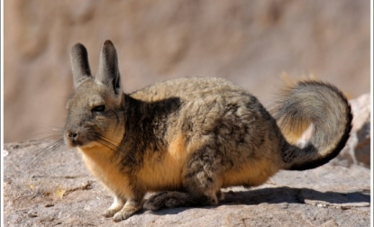

Este gran Felino solitario, vive en más lugares que cualquier otro mamífero salvaje terrestre en el hemisferio Occidental: se extiende desde Yukón, en Canadá al sur de los Andes de América del sur. El puma es Adaptable y generalista, por lo que se encuentra en los principales biomas de toda América. Es el segundo mayor felino en el nuevo mundo, después del jaguar, y el cuarto más grande del mundo después del tigre,león y jaguar, aunque está más emparentado con los pequeños felinos. Como cazador y depredador de emboscada el puma persigue una variedad de presas. Su principal alimento son los ungulados como el ciervo en particular en la parte septentrional de su área de distribución pero también caza especies tan pequeñas como insectos y roedores. Prefiere hábitats con densa vegetación durante las horas de acecho pero puede vivir en zonas abiertas El puma es territorial y tiene una baja densidad de población. Cada territorio de un puma dependerá de su extensión, la vegetación, y la abundancia de las presas. Aunque es depredador no siempre es la especie dominante en su área de distribución, como cuando compite con los animales de presa como el lobo gris. Se trata de un felino solitario y por lo general evita a las personas, es raro que ataque a un ser humano. Fue considerado una plaga peligrosa a partir de la colonización europea de América. Sumado a la progresiva ocupación humana de los hábitats del puma, ha significado que las poblaciones han disminuido en muchas partes de su promedio histórico. En particular fue extinguido en la parte oriental de América del Norte, con la excepción de un caso aislado de la subpoblación de la Florida.
Con su amplia distribución geográfica el puma tiene decenas de nombres y es mencionado con diversas referencias en la mitología de los pueblos indígenas de la América y también en la cultura contemporánea. Solo en inglés el puma tiene más de 40 nombres de los cuales cougar y mountain lion (león de montaña) son muy populares .Otros nombre incluyen catamount, pantera, painter, y mountain screamer(rugidor de la montaña). En América del Norte ¨pantera¨ se utiliza más a menudo cuando se refieren a la subpoblación de pantera de Florida. En América del Sur habita en la cordillera de la costa (Chile) y en otros lugares con grandes cantidades de vegetación. La gran cantidad de nombres con que se conoce el puma se explica por la enorme amplitud geográfica de su hábitat, es decir el animal estuvo presente en casi todas las culturas precolombinas y cada una le asignó uno o varios nombres. La palabra inglesa ¨cougar¨ ha sido tomada de los portugueses cuccuarana, a través del Francés, aunque el termino originalmente se deriva de la lengua tupí. En náhualt se le llama miztli, en chibcha se le llama chihisaba, en mapudungún ( el sur de hile y Argentina) se le conoce como pangi a la hembra o a toda la especie y trapial al macho y en la Amazonia sucuarana, de origen tupí. La palabra puma se deriva de la lengua quechua del Perú.
Hay muchas especies,su extinción es impensable.Parce que hay muy pocos pero están muy dispersos.
Enlaces a otras páginas
